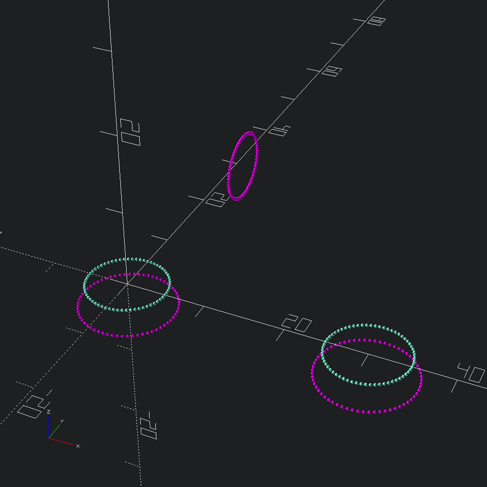
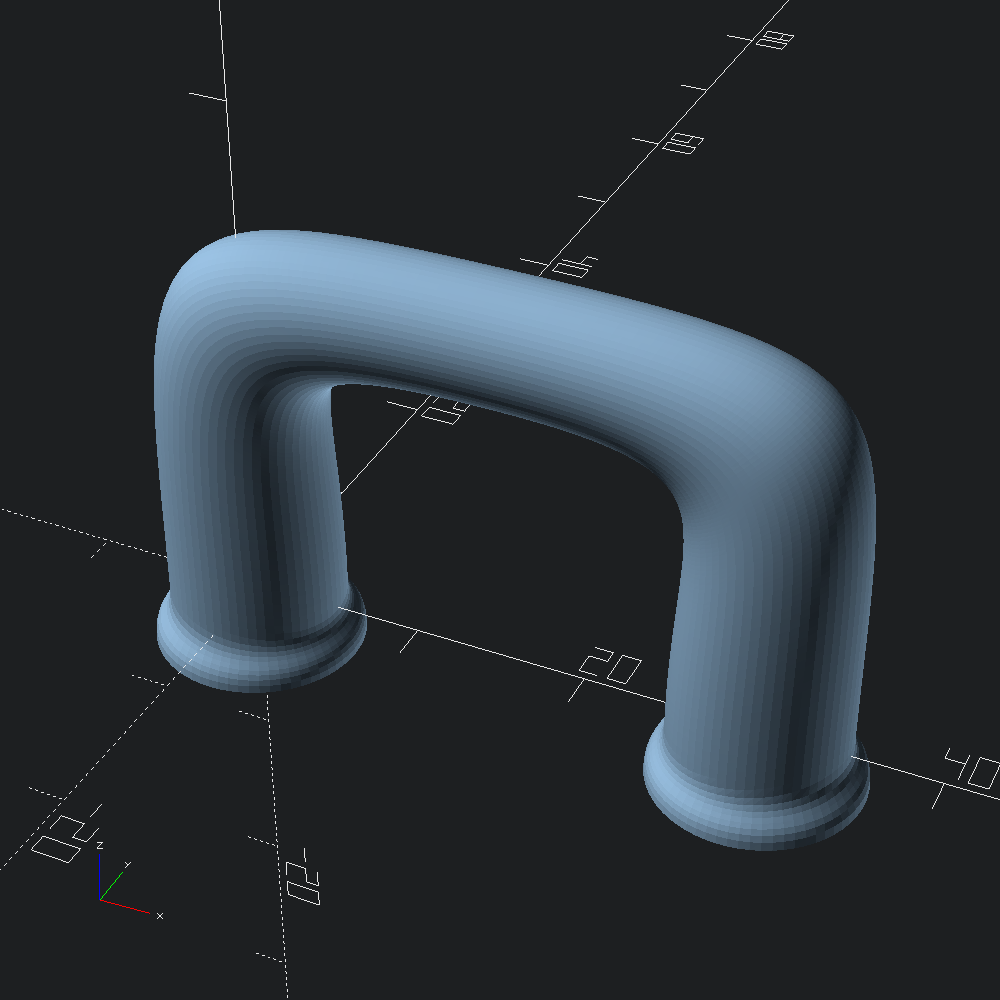
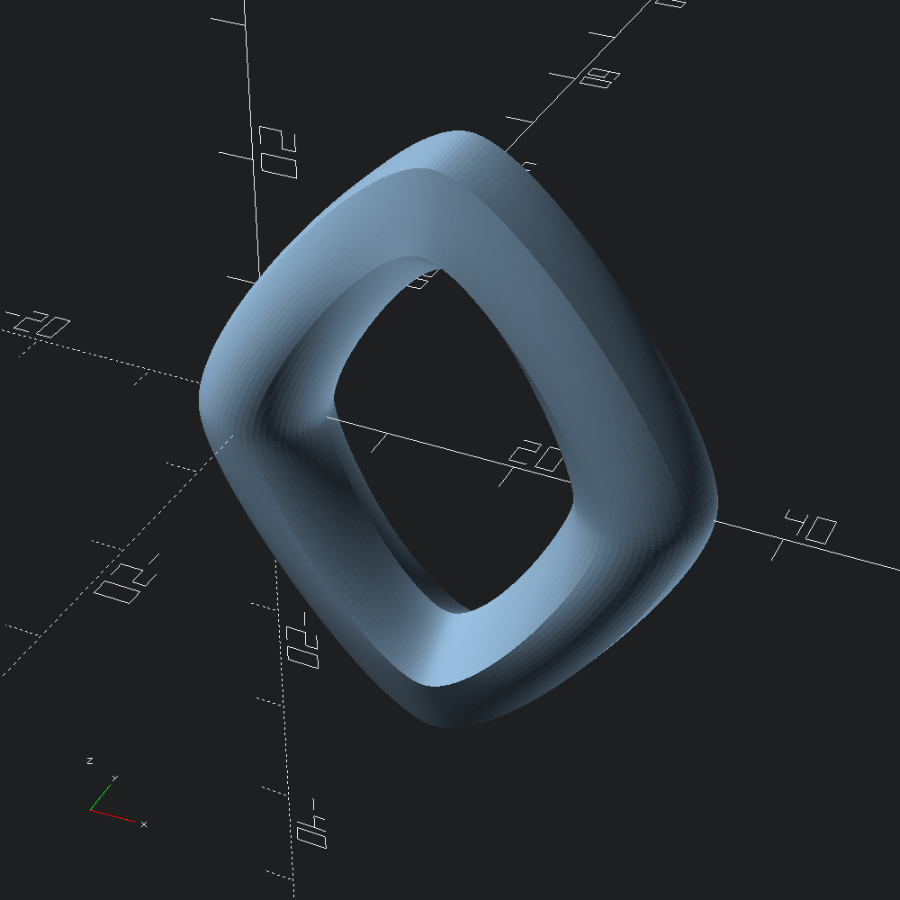

open OCADml
open OSCADmlMesh.skline, like Mesh.skin provides a means of generating a mesh that covers a series of given profiles, but where skin linearly transistions between each profile independently, skline splines through each of the paths formed by the associated vertices from the first profile to the last (or in a loop). to generate meshes that cover over series of profiles. However, unlike skin only resampling is made available for mapping vertices between incomensurate profiles as the point duplication methods (tangent and distance) can easily lead to edge intersections.
let handle_profiles =
let circ = Path3.circle ~fn:64 5. in
let base = Path3.scale (v3 1.2 1.2 1.) circ
and handle = Path3.scale (v3 0.7 0.7 1.) circ in
Path3.
[ ztrans (-3.) base
; circ
; translate (v3 15. 0. 20.) (yrot (Float.pi /. 2.) handle)
; xtrans 30. (yrot Float.pi circ)
; translate (v3 30. 0. (-3.)) (yrot Float.pi base)
]A quick look at the points of our profiles we are about to spline over with alternating colours may help a bit to conceptualize what we are about to give Mesh.skline to work with.
let () =
let show i =
let c = if i mod 2 = 0 then Color.Magenta else Color.Aquamarine in
Debug.show_path3 (fun _ -> Scad.(color c @@ sphere 0.2))
in
List.mapi show handle_profiles |> Scad.union |> Scad.to_file "handle_points.scad"
Using the ?tangents parameter of Bezier3.of_path we can specify the tangents we want for each profile, rather than leaving them up to the automatically computed derivatives (that may differ for each edge path tracing between the profiles). Here we contstrain them to cardinals so we can get a handle that sticks closer to right angles.
let () =
let up = v3 0. 0. 1. in
let tangents = `Tangents [ up; up; v3 1. 0. 0.; V3.neg up; V3.neg up ] in
Mesh.skline ~fn:200 ~size:(`Flat (`Rel 0.5)) ~tangents handle_profiles
|> Scad.of_mesh
|> Scad.to_file ~incl:true "handle_skline.scad"
As mentioned above, continuous curvature loops are also possible. Here we morph cyclically through circular and pentagonal profiles by specifying ~endcaps:`Loop.
let () =
let circ = Path3.circle ~fn:64 5. in
let pent = Path3.(circle ~fn:5 5.) in
let profs =
Path3.
[ circ
; translate (v3 15. 0. 20.) (yrot (Float.pi /. 2.) pent)
; xtrans 30. (yrot Float.pi circ)
; translate (v3 15. 0. (-20.)) (yrot (Float.pi *. 1.5) pent)
]
in
Mesh.skline ~endcaps:`Loop ~fn:200 ~size:(`Flat (`Rel 0.1)) profs
|> Scad.of_mesh
|> Scad.to_file ~incl:true "edgy_loop.scad"